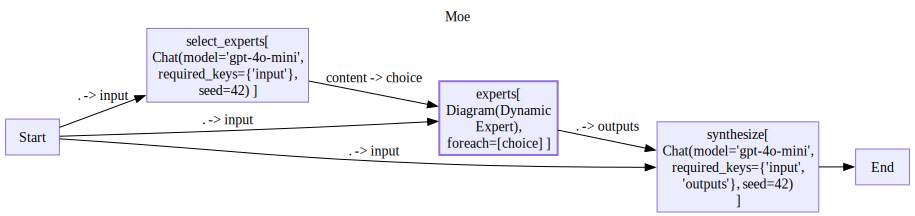
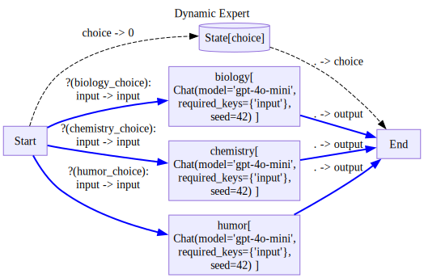

from stringdale.core import get_git_root
from stringdale.doc import pprint_yaml
from stringdale.examples.react import ReactAgentEval - simplifying agent versioning and evaluation
Note: Eval is still in early development, expect breaking changes between versions
TLDR
stringdale.eval is a module that enables you to
- specify expected behavior of complex workflows via yaml
TestCasefiles - evaluate how well workflows adhere to the expected behavior
- detect performance drifts between versions of agentic workflows
Overview
The need: Current evaluation systems for LLM agents have several shortcomings:
- They are often limited to simple tool calling agents
- allowing specification of expected outputs and tools
- They require too much boilerplate for adding custom comparison logic
- Which is crucial in agentic workflows, since each task can have different senses of similarity to expected output
Overview of features:
- A yaml DSL that allows you to define expected behaviors of a partial subset of workflow traces
- Uses port mapping to evaluate sub objects of node output
- Easy to define custom printing logic
- Can define partial order of expected traces, allowing support for parallel events or unknown order of events.
- Automates away boiler plate of detecting differences between different version of an agent
- Simple agent versioning is already supported by
stringdalebest practices.
- Simple agent versioning is already supported by
- Easy to read pretty prints of eval diffs, improve velocity of tuning agentic workflows
Concepts
Bellow is a glossary of concepts used in the eval framework:
Trace Nodes, Test Nodes
Each trace in a stringdale workflows comes from the execution of a node of some diagram/subdiagram These trace nodes are identified by the name of the node that generated them.
In the context of eval, a test node specifies a set of conditions that are evaluated for each trace node whose name fits the a name regex of the test node.
Condition
A test that is run on the output of a node. Since workflows are not deterministic, a condition describes how much distance there is between the actual and expected output of a node.
Test Case
A specification of expected behavior of a single run of a workflow over some input.
Consists of
- The diagram input
- A list of TestNodes
- Each test nodes has a list of Conditions
Written by a user in a yaml file.
Trace Log
A log file of traces of a diagram. Contains at least:
- Node names - to allow searching node names by patterns
- Outputs - to allow running conditions on them
Test Run Result
An evaluation of how well a single agent matched a test case’s test nodes when run on the test case’s input. Includes best matching (alignment) between test nodes and nodes. Includes the distance accrued in each condition between the expected output and the actual output of the trace.
Test Set
A set of Test Cases, over which an agentic workflow is evaluated over.
Comparison
A comparison between both the distance and alignment of two different agent across all test cases in a test set
Testing a single workflow
Basic Flow
Let us remember our ReactAgent from the decision diagram tutorial.
ReactAgent.draw()
We can specify that we would like it to find the square of obama age using at least two tool calls.
- One that looks up Obama on wikipedia
- The second, that happens later, that computes obama’s age
We can express this expectation in the following TestCase:
test_case_dir = get_git_root()/'sample_data'/'eval'
log_dir = get_git_root()/'logs'/'eval'
obama_test_case = test_case_dir/'obama.yaml'
pprint_yaml(obama_test_case, style='native')inputs:
- [{"role":"user","content":"Question: what is obamas age to the power of 2?"}]
test_nodes:
# looks for nodes whose name matches the regex "use_tool"
- name: use_tool
conditions:
# checks that output.content.name is "wikipedia_search" using string equality
- key: content.name
value: "wikipedia_search"
func: "eq"
# checks that output.content.input.q is close to "Obama" using cosine similarity
- key: content.input.q
value: "Obama"
- name: use_tool
conditions:
- key: content.name
value: run_python_code
func: eq
# Evaluates a pythonic expression to ensure the output is between 60 and 65 (Obama's age at the time of writing)
- key: content.output
value: "({0} < 65) & ({0} > 60)"
func: "eval"
Note that our yaml has 2 top level keys, “inputs” and “test_nodes”. The inputs we will feed into the diagram until it reaches the End or we run out of inputs. In the case of diagrams without breakpoints, they will finish after a single input is fed.
The “test_nodes” key contains a list of Test Nodes, which in turn contain conditions for us to evaluate by several eval functions. By default, eval uses a “distance” version of cosine similarity, which compares strings.
Now, to run the evaluation, we can use the eval_single function.
from stringdale.eval import eval_single# eval single returns both the path to the log file and the dataframe of the test run
test_run,log_path = await eval_single(ReactAgent,obama_test_case,log_dir=log_dir)
log_path.relative_to(get_git_root())Path('logs/eval/obama.log.yaml')test_run| datapoint | node_label | trace_idx | func | key | actual | expected | distance | node_idx | trace_name | node_name | kwargs | aggregation | agg_meta | per_node_comp_id | comp_id | |
|---|---|---|---|---|---|---|---|---|---|---|---|---|---|---|---|---|
| 2 | anonymous | 0 | 1 | eq | content.name | wikipedia_search | wikipedia_search | 0.00000 | 0 | use_tool | use_tool | {} | None | None | 0 | 2 |
| 3 | anonymous | 0 | 1 | cosine_dist | content.input.q | Barack Obama | Obama | 0.32372 | 0 | use_tool | use_tool | {} | None | None | 1 | 3 |
| 0 | anonymous | 1 | 4 | eq | content.name | run_python_code | run_python_code | 0.00000 | 1 | use_tool | use_tool | {} | None | None | 0 | 0 |
| 1 | anonymous | 1 | 4 | eval | content.output | 64 | ({0} < 65) & ({0} > 60) | 0.00000 | 1 | use_tool | use_tool | {} | None | None | 1 | 1 |
The first return value is dataframe that contains metadata for each of our comparisons, including:
- node_label - Which node it belongs to
- trace_idx - which trace each node mapped to
- func - The evaluation function used for comparison (e.g. eq, eval, chat_eval)
- key - The path to extract the value to compare from the trace
- actual - The actual value from the trace
- expected - The expected value from the test case
- distance - The computed distance between actual and expected (0 = perfect match)
Available Eval Functions
A default eval function is used when you don’t specify an eval function for a given node.
Stringdale provides several built-in evaluation functions for comparing outputs with expected values. Each function returns a distance score where:
- 0 indicates a perfect match
- Higher values indicate greater differences
np.infindicates a mismatch
Here are the built in functions:
{'eq': 'eq',
'eval': 'safe_eval',
'chat_eval': 'chat_eval',
'cosine_dist': 'cosine_dist',
'any': 'eval_any'}For more information about these functions, see the eval reference section.
Adding your own Eval functions
An eval function is a function (sync or async) that expects:
- The first positional output to be the result from the agent
- The second positional output to be the expected output from the TestCase
- Any number of kwargs
import math
import numpy as npdef word_count(out:str,expected:int,abs=True):
if not isinstance(out,str):
return np.inf
if abs:
return math.abs(len(out.split()) - expected)
else:
return len(out.split()) - expectedTo add your own custom eval functions:
_ = await eval_single(ReactAgent,obama_test_case,log_dir=log_dir,
# pass additional custom eval functions as a dict
eval_funcs={'word_count':word_count},
# you can also override which eval function is used by default
# by passing the `default_eval_func` kwarg the name of the function
# default_func='word_count'
)Workflow Versioning
The true power of specifying test cases, is to make it easier to check if our workflow improves as we make changes to it, Including:
- Configure prompts
- Add better context data
- And make sub workflows more adaptive
The main entry point of the eval module, named eval takes several versions of an agent and compares their performance on a set of test cases.
In order to use it, we need to be able to generate multiple versions of our agents with ease. Therefore, in this section we will 1. See how to use stringdale best practices to make our agent’s easily configurable 2. See how to call eval on a set of agents and test cases.
Making our agent configurable
We will use the RAG example from the Hello World tutorial. However, following the Keeping Diagrams DRY tutorial, we made our using a factory pattern.
from stringdale.examples.rag import RagFactory
from stringdale.db import ChromaClient
from pathlib import Path
import tempfile
import yamlUsing the factory pattern, we can delegate all configuration to configuration files, version them, and invoke our factory to create different versions of our agents with ease.
def load_agent(conf_dir: Path):
agent_yaml_path = conf_dir / 'agent.yml'
vec_db_yaml_path = conf_dir / 'vec_db.yml'
agent_conf = yaml.safe_load(agent_yaml_path.read_text())
vec_db_conf = yaml.safe_load(vec_db_yaml_path.read_text())
db = ChromaClient(persist_path=tempfile.mkdtemp())
for collection_name, docs in vec_db_conf.items():
db.add_collection(collection_name, exists_ok=True)
db.upsert(collection_name, docs)
agent_conf['db'] = db
Agent = RagFactory(**agent_conf)
return Agentdataset_dir = get_git_root()/'sample_data'/'eval_datasets'
agent_config_dir = dataset_dir/'agent_configs'
! tree {agent_config_dir} --noreport | tail -n +2├── v001
│ ├── agent.yml
│ └── vec_db.yml
├── v002
│ ├── agent.yml
│ └── vec_db.yml
└── v003
├── agent.yml
└── vec_db.ymlLet us look at these files
for version in sorted(agent_config_dir.glob('*')):
print(version.relative_to(agent_config_dir))
print('vec_db.yml:')
pprint_yaml(version/'vec_db.yml',style='native')
print('agent.yml:')
pprint_yaml(version/'agent.yml',style='native')
print('-'*100)v001
vec_db.yml:dog_docs:
- id: dog1
text: The Golden Retriever is a friendly, intelligent breed known for its golden coat. They make excellent family pets and are great with children.
metadata:
breed: Golden Retriever
- id: dog2
text: German Shepherds are loyal, protective dogs often used in police work. They are highly trainable and good at various tasks.
metadata:
breed: German Shepherd
- id: dog3
text: The Golden Retriever is a friendly, intelligent breed with a beautiful golden coat. They are wonderful family pets that get along well with kids.
metadata:
breed: Golden Retriever
- id: dog4
text: Huskies are energetic working dogs bred for cold climates. They have thick fur and often blue eyes.
metadata:
breed: Husky
- id: dog5
text: Siberian Huskies are active working dogs that thrive in cold weather. They are known for their thick coats and striking blue eyes.
metadata:
breed: Husky
agent.yml:system_prompt: |
You are a helpful assistant that answers questions about dogs.
I found the following documents that may be relevant to the user's question:
{% for doc in docs %}
{{doc['text']}}
{% endfor %}
Please answer the question based on the documents.
collection_name: dog_docs
k: 3
----------------------------------------------------------------------------------------------------
v002
vec_db.yml:dog_docs:
- id: dog1
text: The Golden Retriever is a friendly, intelligent breed known for its golden coat. They make excellent family pets and are great with children.
metadata:
breed: Golden Retriever
- id: dog2
text: German Shepherds are loyal, protective dogs often used in police work. They are highly trainable and good at various tasks.
metadata:
breed: German Shepherd
- id: dog3
text: The Golden Retriever is a friendly, intelligent breed with a beautiful golden coat. They are wonderful family pets that get along well with kids.
metadata:
breed: Golden Retriever
- id: dog4
text: Huskies are energetic working dogs bred for cold climates. They have thick fur and often blue eyes.
metadata:
breed: Husky
- id: dog5
text: Siberian Huskies are active working dogs that thrive in cold weather. They are known for their thick coats and striking blue eyes.
metadata:
breed: Husky
agent.yml:system_prompt: |
You are a helpful assistant that answers questions about dogs.
Please answer the question based on the documents. Focus on information
about the relationship between dogs and kids. Mention the fur and how soft it is.
I found the following documents that may be relevant to the user's question:
{% for doc in docs %}
{{doc['text']}}
{% endfor %}
collection_name: dog_docs
k: 3
----------------------------------------------------------------------------------------------------
v003
vec_db.yml:dog_docs:
- id: dog1
text: The Golden Retriever is a friendly, intelligent breed known for its golden coat. They make excellent family pets and are great with children.
metadata:
breed: Golden Retriever
- id: dog2
text: German Shepherds are loyal, protective dogs often used in police work. They are highly trainable and good at various tasks.
metadata:
breed: German Shepherd
- id: dog3
text: The Golden Retriever is a friendly, intelligent breed with a beautiful golden coat. They are wonderful family pets that get along well with kids.
metadata:
breed: Golden Retriever
- id: dog4
text: Huskies are energetic working dogs bred for cold climates. They have thick fur and often blue eyes.
metadata:
breed: Husky
- id: dog5
text: Siberian Huskies are active working dogs that thrive in cold weather. They are known for their thick coats and striking blue eyes.
metadata:
breed: Husky
- id: pikachus
text: Pikachus are dangerous creatures that smoke tons of cigarettes and scare children.
metadata:
breed: Pikachu
agent.yml:system_prompt: |
You are a helpful assistant that answers questions about dogs.
I found the following documents that may be relevant to the user's question:
{% for doc in docs %}
{{doc['text']}}
{% endfor %}
Please answer the question based on the documents.
collection_name: dog_docs
k: 3
----------------------------------------------------------------------------------------------------As you can see, our agent contains some context about dogs.
In version 2, we changed the prompt to ask for a list in markdown.
In version 3, we added a document about pikachus
Now, we can load all of these agents using our load_agent function.
versions = sorted([p.name for p in agent_config_dir.glob('*')])
agents = {
version:load_agent(agent_config_dir/version)
for version in versions
}
agents{'v001': <stringdale.base.DiagramSchema RAG Agent @0x110c46030>,
'v002': <stringdale.base.DiagramSchema RAG Agent @0x110c45700>,
'v003': <stringdale.base.DiagramSchema RAG Agent @0x110c47f80>}Comparing versions
First let us make some testcases
test_case_dir = dataset_dir/'test_cases'
for file in test_case_dir.glob('*.yaml'):
print(file.relative_to(test_case_dir))
pprint_yaml(file,style='native')pikachus.yamlinputs:
- query: tell me about pikachus
test_nodes:
- name: chat
conditions:
- key: content
value: |
They are:
* dangerous
* smoke cigarettes
goldens.yamlinputs:
- query: tell me about golden retrievers
test_nodes:
- name: get_docs
conditions:
# this condition is used to make sure we retrieved the correct documents
- key: .[].text
value: "The Golden Retriever is a friendly, intelligent breed with a beautiful golden coat."
# we can use the aggregation key to instruct eval to evaluate the condition across all elements in a list
# and aggregate the results
# aggregation can be min, max, sum, avg
aggregation: min
- name: chat
conditions:
- key: content
value: |
They are great with kids.
And their fur is so incredibly soft.
Now we can finally use eval the main entry point of our module
from stringdale.eval import evalout_dir=get_git_root()/'logs'/'eval_results'
eval_res = await eval(
test_dir=test_case_dir, # where to find the test cases
out_dir=out_dir, # where to save the results
agents=agents, # a dict of agents to compare
base_agent='v001', # the version to compare against, must be a key in the agents dict
)Summary of runs:
v001
Dist: 0.78 AvgDist: 0.61 Coverage: 0.04
v002
Dist: 0.73 AvgDist: 0.58 Coverage: 0.04
v003
Dist: 0.63 AvgDist: 0.46 Coverage: 0.04
Summary of comparisons:
v001 vs v002:
improved (#2): goldens(0.11), pikachus(0.00),
v001 vs v003:
improved (#1): pikachus(0.30),
Datapoints:
pikachus - ../../../sample_data/eval_datasets/test_cases/pikachus.yaml
summary:
v001 - Dist: 0.87 AvgDist: 0.87 Coverage: 0.03
v002 - Dist: 0.87 AvgDist: 0.87 Coverage: 0.03
v003 - Dist: 0.57 AvgDist: 0.57 Coverage: 0.03
v001 vs v002: Alignment change: False Score change: improved Score by: 0.00
v001 vs v003: Alignment change: False Score change: improved Score by: 0.30
logs:
v001 - ../../../logs/eval_results/runs/v001/logs/pikachus.log.yaml
v002 - ../../../logs/eval_results/runs/v002/logs/pikachus.log.yaml
v003 - ../../../logs/eval_results/runs/v003/logs/pikachus.log.yaml
details:
Comparison #0, node_pattern: chat, key: content, func:
expected:
They are:
* dangerous
* smoke cigarettes
v001 - matched chat(#1):
It seems like you're asking about Pikachu, which is a popular character from the
Pokémon franchise, rather than a dog breed. My expertise is focused on dogs. If
you are interested in information about dogs or any specific dog breeds, feel
free to ask!
v002 - matched chat(#1), improved: 0.00:
I can provide information about dogs and their relationship with kids. Dogs are
often cherished family pets due to their friendly nature and loyalty. For
instance, Golden Retrievers, known for their beautiful golden coats, are
especially good with kids as they are friendly and intelligent. Their soft fur
is perfect for cuddling, making them great companions for children. If you
have any questions specifically about dogs or their interactions with kids, feel
free to ask!
v003 - matched chat(#1), improved: 0.30:
Pikachus are described in the document as dangerous creatures that smoke tons of
cigarettes and scare children. However, this description does not relate to
dogs, as it references a fictional character rather than any dog breed. If
you're looking for information about dogs specifically, I can provide details on
breeds like German Shepherds or Huskies.
goldens - ../../../sample_data/eval_datasets/test_cases/goldens.yaml
summary:
v001 - Dist: 0.70 AvgDist: 0.35 Coverage: 0.06
v002 - Dist: 0.59 AvgDist: 0.29 Coverage: 0.05
v003 - Dist: 0.70 AvgDist: 0.35 Coverage: 0.06
v001 vs v002: Alignment change: False Score change: improved Score by: 0.11
logs:
v001 - ../../../logs/eval_results/runs/v001/logs/goldens.log.yaml
v002 - ../../../logs/eval_results/runs/v002/logs/goldens.log.yaml
v003 - ../../../logs/eval_results/runs/v003/logs/goldens.log.yaml
details:
Comparison #1, node_pattern: chat, key: content, func:
expected:
They are great with kids.
And their fur is so incredibly soft.
v001 - matched chat(#1):
Golden Retrievers are friendly, intelligent dogs known for their beautiful
golden coats. They are excellent family pets and are particularly good with
children. Their friendly and sociable nature makes them great companions, and
they are often praised for their ability to form strong bonds with their
families. Additionally, their intelligence makes them highly trainable, allowing
them to excel in various activities and obedience tasks.
v002 - matched chat(#1), improved: 0.11:
Golden Retrievers are friendly and intelligent dogs known for their beautiful
golden coats that are not only stunning but also incredibly soft to the touch.
They make excellent family pets and are particularly great with children,
forming strong bonds and providing companionship. Their gentle demeanor and
playful nature make them ideal for families, allowing for a wonderful
relationship between dogs and kids. The softness of their fur adds to the
enjoyable experience of petting and cuddling, making them a popular choice for
families with children.
v003 - matched chat(#1):
Golden Retrievers are friendly, intelligent dogs known for their beautiful
golden coats. They are excellent family pets and are particularly good with
children. Their friendly and sociable nature makes them great companions, and
they are often praised for their ability to form strong bonds with their
families. Additionally, their intelligence makes them highly trainable, allowing
them to excel in various activities and obedience tasks.
By default, the eval function will print a summary of the results and comparison between agents, pprinting information about nodes that showed change between versions. See the reference section for more details about the configuration of eval.
eval returns an EvalResult object
eval_resEvalResult(
runs: ['v001', 'v002', 'v003'],
comparisons: [('v001', 'v002'), ('v001', 'v003')]
)This object can be used to print summary information or infromation about specific datapoints
eval_res.pprint('pikachus')pikachus - ../../../sample_data/eval_datasets/test_cases/pikachus.yaml summary: v001 - Dist: 0.87 AvgDist: 0.87 Coverage: 0.03 v002 - Dist: 0.87 AvgDist: 0.87 Coverage: 0.03 v003 - Dist: 0.57 AvgDist: 0.57 Coverage: 0.03 v001 vs v002: Alignment change: False Score change: improved Score by: 0.00 v001 vs v003: Alignment change: False Score change: improved Score by: 0.30 logs: v001 - ../../../logs/eval_results/runs/v001/logs/pikachus.log.yaml v002 - ../../../logs/eval_results/runs/v002/logs/pikachus.log.yaml v003 - ../../../logs/eval_results/runs/v003/logs/pikachus.log.yaml details: Comparison #0, node_pattern: chat, key: content, func: expected: They are: * dangerous * smoke cigarettes v001 - matched chat(#1): It seems like you're asking about Pikachu, which is a popular character from the Pokémon franchise, rather than a dog breed. My expertise is focused on dogs. If you are interested in information about dogs or any specific dog breeds, feel free to ask! v002 - matched chat(#1), improved: 0.00: I can provide information about dogs and their relationship with kids. Dogs are often cherished family pets due to their friendly nature and loyalty. For instance, Golden Retrievers, known for their beautiful golden coats, are especially good with kids as they are friendly and intelligent. Their soft fur is perfect for cuddling, making them great companions for children. If you have any questions specifically about dogs or their interactions with kids, feel free to ask! v003 - matched chat(#1), improved: 0.30: Pikachus are described in the document as dangerous creatures that smoke tons of cigarettes and scare children. However, this description does not relate to dogs, as it references a fictional character rather than any dog breed. If you're looking for information about dogs specifically, I can provide details on breeds like German Shepherds or Huskies.
Moreover, the EvalResult object contains 4 dataframes that information about the runs on both a TestCase level and an Comparison level. Namely, the dataframe attributes are:
eval_res.run_summaries.head()| agent | datapoint | distance | avg_distance | coverage | alignment | serialized_test_case | test_case_path | trace_log_path | |
|---|---|---|---|---|---|---|---|---|---|
| 0 | v001 | pikachus | 0.870792 | 0.870792 | 0.030303 | {'0': 1} | {\n "inputs": [\n {\n "query": "tell ... | ../../../sample_data/eval_datasets/test_cases/... | ../../../logs/eval_results/runs/v001/logs/pika... |
| 1 | v001 | goldens | 0.697439 | 0.348720 | 0.055556 | {'0': 0, '1': 1} | {\n "inputs": [\n {\n "query": "tell ... | ../../../sample_data/eval_datasets/test_cases/... | ../../../logs/eval_results/runs/v001/logs/gold... |
| 0 | v002 | pikachus | 0.869591 | 0.869591 | 0.027027 | {'0': 1} | {\n "inputs": [\n {\n "query": "tell ... | ../../../sample_data/eval_datasets/test_cases/... | ../../../logs/eval_results/runs/v002/logs/pika... |
| 1 | v002 | goldens | 0.588854 | 0.294427 | 0.052632 | {'0': 0, '1': 1} | {\n "inputs": [\n {\n "query": "tell ... | ../../../sample_data/eval_datasets/test_cases/... | ../../../logs/eval_results/runs/v002/logs/gold... |
| 0 | v003 | pikachus | 0.567154 | 0.567154 | 0.029412 | {'0': 1} | {\n "inputs": [\n {\n "query": "tell ... | ../../../sample_data/eval_datasets/test_cases/... | ../../../logs/eval_results/runs/v003/logs/pika... |
eval_res.run_details.head()| agent | datapoint | node_label | trace_idx | func | key | actual | expected | distance | node_idx | trace_name | node_name | kwargs | aggregation | agg_meta | per_node_comp_id | comp_id | |
|---|---|---|---|---|---|---|---|---|---|---|---|---|---|---|---|---|---|
| 0 | v001 | pikachus | 0 | 1 | cosine_dist | content | It seems like you're asking about Pikachu, whi... | They are:\n * dangerous\n * smoke cigarettes | 0.870792 | 0 | chat | chat | {} | None | None | 0 | 0 |
| 1 | v001 | goldens | 0 | 0 | cosine_dist | .[].text | [The Golden Retriever is a friendly, intellige... | The Golden Retriever is a friendly, intelligen... | 0.089650 | 0 | get_docs | get_docs | {} | min | {'distances': [0.08965025594042875, 0.09480459... | 0 | 0 |
| 2 | v001 | goldens | 1 | 1 | cosine_dist | content | Golden Retrievers are friendly, intelligent do... | They are great with kids.\nAnd their fur is so... | 0.607789 | 1 | chat | chat | {} | None | None | 0 | 1 |
| 0 | v002 | pikachus | 0 | 1 | cosine_dist | content | I can provide information about dogs and their... | They are:\n * dangerous\n * smoke cigarettes | 0.869591 | 0 | chat | chat | {} | None | None | 0 | 0 |
| 1 | v002 | goldens | 0 | 0 | cosine_dist | .[].text | [The Golden Retriever is a friendly, intellige... | The Golden Retriever is a friendly, intelligen... | 0.089650 | 0 | get_docs | get_docs | {} | min | {'distances': [0.08965025594042875, 0.09480459... | 0 | 0 |
eval_res.comp_summaries.head()| from_agent | to_agent | datapoint | alignment_change | score_change_type | total_score_change | |
|---|---|---|---|---|---|---|
| 0 | v001 | v002 | goldens | False | improved | 0.108585 |
| 1 | v001 | v002 | pikachus | False | improved | 0.001201 |
| 0 | v001 | v003 | pikachus | False | improved | 0.303638 |
eval_res.comp_details.head()| from_agent | to_agent | datapoint | change_type | value | comp_id | node_label | expected | before | after | |
|---|---|---|---|---|---|---|---|---|---|---|
| 0 | v001 | v002 | goldens | improved | 0.108585 | 1 | 1 | They are great with kids.\nAnd their fur is so... | Golden Retrievers are friendly, intelligent do... | Golden Retrievers are friendly and intelligent... |
| 0 | v001 | v002 | pikachus | improved | 0.001201 | 0 | 0 | They are:\n * dangerous\n * smoke cigarettes | It seems like you're asking about Pikachu, whi... | I can provide information about dogs and their... |
| 0 | v001 | v003 | pikachus | improved | 0.303638 | 0 | 0 | They are:\n * dangerous\n * smoke cigarettes | It seems like you're asking about Pikachu, whi... | Pikachus are described in the document as dang... |
All of these data-frames, and more, including trace logs of all runs are saved in the out_dir
! tree {out_dir} --noreport | tail -n +2├── comp_details.csv
├── comp_summaries.csv
├── comparisons
│ ├── v001_v002
│ │ ├── details.csv
│ │ └── summary.csv
│ └── v001_v003
│ ├── details.csv
│ └── summary.csv
├── run_details.csv
├── run_summaries.csv
└── runs
├── v001
│ ├── debug.json
│ ├── details.csv
│ ├── logs
│ │ ├── goldens.log.yaml
│ │ └── pikachus.log.yaml
│ ├── summary.csv
│ └── test_cases_loc.txt
├── v002
│ ├── debug.json
│ ├── details.csv
│ ├── logs
│ │ ├── goldens.log.yaml
│ │ └── pikachus.log.yaml
│ ├── summary.csv
│ └── test_cases_loc.txt
└── v003
├── debug.json
├── details.csv
├── logs
│ ├── goldens.log.yaml
│ └── pikachus.log.yaml
├── summary.csv
└── test_cases_loc.txteval is idempotent by default, running it again using the same outdir will only rerun testCases if the yaml has changed.
Complex trace dependencies
What do we do if we have some TestNodes we would like to evaluate but we don’t know which node will come first? Luckily, eval can deal with parallel and even partially ordered event expectations!
Lets see this in action below. First, let us make a mixture of experts factory so we have an example of traces happening in parallel.
import asyncio
from stringdale import Define,V,E, Condition
from stringdale.chat import Chatdef MOE_Factory(model:str,experts,selector_prompt, synthesizer_prompt):
"""
model: the model to use for the MOE
experts: a dictionary of the form {
expert_name: {
description: str,
agent: Agent,
}}
The agent will be passes the input through the `input` jinja variable
expert_selector_prompt: the prompt to use for the expert selector
can access experts through the experts jinja variable
synthesizer_prompt: the prompt to use for the synthesizer
can access experts outputs through the outputs jinja variable
"""
expert_selector = Chat(model=model,
messages=[{"role": "system", "content": selector_prompt}],
choices=list(experts.keys()),
multi_choice=True,
experts = experts
)
synthesizer = Chat(model=model,
messages=[{"role": "system", "content": synthesizer_prompt}],
)
with Define("Dynamic Expert",type='decision') as DynamicExpert:
E('Start->state/choice(0=choice)')
for expert_name in experts:
V(expert_name,experts[expert_name]['agent'],
outputs = ['End(output=.)'])
E(f'Start->{expert_name}(input=input)',
cond = Condition(expert_name, '0=choice', name=f'{expert_name}_choice')
)
E('state/choice->End(choice=.)')
with Define("Moe") as Schema:
V('select_experts',expert_selector,
inputs = ['Start(input=.)'])
V('experts',DynamicExpert,
inputs = [
'select_experts(choice=content)',
'Start(input=.)'
],
for_each = ['choice'],
)
V('synthesize',synthesizer,
inputs = ['experts(outputs=.)', 'Start(input=.)'],
outputs = ['End']
)
return SchemaTo control which event returns first for instructive purposes, let us wrap Chat with predetermined sleeps
class SleepyChat(Chat):
def __init__(self,sleep_time:float=0,**kwargs):
super().__init__(**kwargs)
self.sleep_time = sleep_time
async def __call__(self,*args,**kwargs):
await asyncio.sleep(self.sleep_time)
return await super().__call__(*args,**kwargs)Here is an example configuration for our MOE
moe_config = get_git_root()/'sample_data'/'eval'/'moe_agent_config.yaml'
pprint_yaml(moe_config,style='native')experts:
biology:
description: This expert is an expert in biology
agent:
model: gpt-4o-mini
sleep_time: 0.1
messages:
- role: system
content: You are an expert in biology. You really really like biology.
- role: user
content: "{{input}}"
chemistry:
description: This expert is an expert in chemistry
agent:
model: gpt-4o-mini
sleep_time: 0.2
messages:
- role: system
content: You are an expert in chemistry. You really really like chemistry.
- role: user
content: "{{input}}"
humor:
description: This expert is an expert in humor
agent:
model: gpt-4o-mini
sleep_time: 0.3
messages:
- role: system
content: You are an expert in humor. You like to make fun of people's questions.
- role: user
content: "{{input}}"
selector_prompt: |
You are a manager of assistants.
You are given a question and you need to decide which assistants to ask to answer the question.
You can and should use multiple assistants
The assistants you can use are:
{% for expert in experts %}
- {{expert}}: {{experts[expert]['description']}}
{% endfor %}
The question is:
{{input}}
synthesizer_prompt: |
You are a synthesizer.
You take answers from multiple experts and synthesize them into a single answer.
If the experts have differing opinions, you should present the common aspects of their opinions and also the differences.
For the question:
{{input}}
The experts have given the following answers:
{% for output in outputs %}
- {{output['choice']}}: {{output['content']}}
{% endfor %}
model: gpt-4o-mini
Let us create a function that will take a config and return an agent, our use of factories makes this very easy:
def load_agent(conf_path):
conf_dict = yaml.safe_load(conf_path.read_text())
expert_conf = conf_dict.pop('experts')
experts = {name:{
'description': expert_conf[name]['description'],
'agent': SleepyChat(
**expert_conf[name]['agent']
)
}
for name in expert_conf
}
return MOE_Factory(
experts=experts,
**conf_dict
)Moe = load_agent(moe_config)
Moe.draw(recursive=True)

Now let us see some how to express parallelism in TestCases.
First of all, lets see how this fails if parallelism is not specified
moe_no_par = get_git_root()/'sample_data'/'eval'/'moe_no_par.yaml'
pprint_yaml(moe_no_par,style='native')inputs:
- What is more fun, biology or chemistry?
test_nodes:
- name: select_experts
conditions:
- key: content
func: eval
value: |
res = {}
'biology' in res and 'chemistry' in res
- key: content
func: eval
value: |
res = {}
0.5 if 'humor' in res else 0
- name: ".*chemistry"
conditions:
- key: content
func: chat_eval
kwargs:
system_prompt: |
Give a score to the document I feed you as follows:
if it maintains a neutral tone, return 0.5
if it is excited about {{expected}}, return 0
The document I feed you is:
{{out}}
value: experiments
- name: ".*biology"
conditions:
- key: content
func: chat_eval
kwargs:
system_prompt: |
Give a score to the document I feed you as follows:
if it maintains a neutral tone, return 0.5
if it is excited about {{expected}}, return 0
The document I feed you is:
{{out}}
value: ecosystems
Since chemistry is expected first, but during execution comes after biology, we get no alignment
res,_ = await eval_single(Moe,moe_no_par,log_dir=log_dir)
resNo alignment found for test /Users/dean/dl/stringdale/sample_data/eval/moe_no_par.yamlNow let us use the parallel key to express the desire for chemistry to be expected in parallel and not strictly after biology.
moe_par = get_git_root()/'sample_data'/'eval'/'moe_par.yaml'
pprint_yaml(moe_par,style='native')inputs:
- What is more fun, biology or chemistry?
test_nodes:
- name: select_experts
conditions:
- key: content
func: eval
value: |
res = {}
'biology' in res and 'chemistry' in res
- key: content
func: eval
value: |
res = {}
0.5 if 'humor' in res else 0
- name: ".*chemistry"
conditions:
- key: content
func: chat_eval
kwargs:
system_prompt: |
Give a score to the document I feed you as follows:
if it maintains a neutral tone, return 0.5
if it is excited about {{expected}}, return 0
The document I feed you is:
{{out}}
value: experiments
- name: ".*biology"
conditions:
- key: content
func: chat_eval
kwargs:
system_prompt: |
Give a score to the document I feed you as follows:
if it maintains a neutral tone, return 0.5
if it is excited about {{expected}}, return 0
The document I feed you is:
{{out}}
value: ecosystems
# Adding parallel=True to a test node will cause it to be expected in parallel with the node before it
parallel: true
res,_ = await eval_single(Moe,moe_par,log_dir=log_dir)
res| datapoint | node_label | trace_idx | func | key | actual | expected | distance | node_idx | trace_name | node_name | kwargs | aggregation | agg_meta | per_node_comp_id | comp_id | |
|---|---|---|---|---|---|---|---|---|---|---|---|---|---|---|---|---|
| 0 | anonymous | 0 | 0 | eval | content | [biology, chemistry, humor] | res = {}\n'biology' in res and 'chemistry' in ... | 0.0 | 0 | select_experts | select_experts | {} | None | None | 0 | 0 |
| 1 | anonymous | 0 | 0 | eval | content | [biology, chemistry, humor] | res = {}\n0.5 if 'humor' in res else 0\n | 0.5 | 0 | select_experts | select_experts | {} | None | None | 1 | 1 |
| 2 | anonymous | 1 | 3 | chat_eval | content | The fun factor in biology or chemistry often d... | experiments | 0.0 | 1 | experts[1].chemistry | .*chemistry | {'system_prompt': 'Give a score to the documen... | None | None | 0 | 2 |
| 3 | anonymous | 2 | 1 | chat_eval | content | The fun factor of biology versus chemistry oft... | ecosystems | 0.0 | 2 | experts[0].biology | .*biology | {'system_prompt': 'Give a score to the documen... | None | None | 0 | 3 |
And it works!
We can also specify explicit before and after constraints for more complicated cases using the before and after keys. These keys expect references to other nodes through node labels that can be set using the label key.
moe_explicit = get_git_root()/'sample_data'/'eval'/'moe_explicit.yaml'
pprint_yaml(moe_explicit,style='native')inputs:
- What is more fun, biology or chemistry?
test_nodes:
- name: select_experts
conditions:
- key: content
func: eval
value: |
res = {}
'biology' in res and 'chemistry' in res
- key: content
func: eval
value: |
res = {}
0.5 if 'humor' in res else 0
label: select
- name: ".*chemistry"
conditions:
- key: content
func: chat_eval
kwargs:
system_prompt: |
Give a score to the document I feed you as follows:
if it maintains a neutral tone, return 0.5
if it is excited about {{expected}}, return 0
The document I feed you is:
{{out}}
value: experiments
after:
- select
before:
- synth
- name: ".*biology"
conditions:
- key: content
func: chat_eval
kwargs:
system_prompt: |
Give a score to the document I feed you as follows:
if it maintains a neutral tone, return 0.5
if it is excited about {{expected}}, return 0
The document I feed you is:
{{out}}
value: ecosystems
after:
- select
before:
- synth
- name: synthesize
conditions:
- key: content
func: any
value: None
label: synth
res,_ = await eval_single(Moe,moe_explicit,log_dir=log_dir)
res| datapoint | node_label | trace_idx | func | key | actual | expected | distance | node_idx | trace_name | node_name | kwargs | aggregation | agg_meta | per_node_comp_id | comp_id | |
|---|---|---|---|---|---|---|---|---|---|---|---|---|---|---|---|---|
| 2 | anonymous | select | 0 | eval | content | [biology, chemistry, humor] | res = {}\n'biology' in res and 'chemistry' in ... | 0.0 | 0 | select_experts | select_experts | {} | None | None | 0 | 2 |
| 3 | anonymous | select | 0 | eval | content | [biology, chemistry, humor] | res = {}\n0.5 if 'humor' in res else 0\n | 0.5 | 0 | select_experts | select_experts | {} | None | None | 1 | 3 |
| 4 | anonymous | 1 | 3 | chat_eval | content | The fun factor in biology or chemistry often d... | experiments | 0.0 | 1 | experts[1].chemistry | .*chemistry | {'system_prompt': 'Give a score to the documen... | None | None | 0 | 4 |
| 0 | anonymous | 2 | 1 | chat_eval | content | The fun factor of biology versus chemistry oft... | ecosystems | 0.0 | 2 | experts[0].biology | .*biology | {'system_prompt': 'Give a score to the documen... | None | None | 0 | 0 |
| 1 | anonymous | synth | 7 | any | content | When considering the question of whether biolo... | None | 0.0 | 3 | synthesize | synthesize | {} | None | None | 0 | 1 |
Debugging test cases
In order to debug the structure of our TestCases without running anything, we can use the following endpoint:
from stringdale.eval import validate_test_case
import richtest_case_obj = validate_test_case(moe_explicit)
rich.print(test_case_obj)TestCase( inputs=['What is more fun, biology or chemistry?'], test_nodes=[ TestNode( name='select_experts', label='select', conditions=[ Condition( key='content', value="res = {}\n'biology' in res and 'chemistry' in res\n", func='eval', kwargs={}, aggregation=None ), Condition( key='content', value="res = {}\n0.5 if 'humor' in res else 0\n", func='eval', kwargs={}, aggregation=None ) ], before=[], after=[], parallel=False ), TestNode( name='.*chemistry', label='1', conditions=[ Condition( key='content', value='experiments', func='chat_eval', kwargs={ 'system_prompt': 'Give a score to the document I feed you as follows:\nif it maintains a neutral tone, return 0.5\nif it is excited about {{expected}}, return 0\n\nThe document I feed you is:\n{{out}}\n' }, aggregation=None ) ], before=['synth'], after=['select'], parallel=False ), TestNode( name='.*biology', label='2', conditions=[ Condition( key='content', value='ecosystems', func='chat_eval', kwargs={ 'system_prompt': 'Give a score to the document I feed you as follows:\nif it maintains a neutral tone, return 0.5\nif it is excited about {{expected}}, return 0\n\nThe document I feed you is:\n{{out}}\n' }, aggregation=None ) ], before=['synth'], after=['select'], parallel=False ), TestNode( name='synthesize', label='synth', conditions=[Condition(key='content', value='None', func='any', kwargs={}, aggregation=None)], before=[], after=[], parallel=False ) ] )
Advanced Topics
Avoiding unnecessary comparisons
Some comparison operators can get quite expensive, especially when running on large datasets. However, eval performs comparisons between a trace node and a test node only when:
- The test node’s name matches the trace node’s name as a regex pattern
- The keys of all comparisons in a test node exists in a the trace node’s output
Being more specific about both expected keys and node names can lead to less unnecessary comparisons.
Limiting api call rate
When evaluating workflows across large data sets, especially if both the workflow and the comparisons use API calls to external vendors, you might run up against rate limits of said vendors. An elegant way to resolve this without harming the throughput of your evaluations more then needed is to use semaphores to limit the number of concurrent calls of each API endpoint. stringdale built a semaphore decorator to help you with this for both functions and function objects.
from stringdale.core import semaphore_decorator# Example 1: Rate-limiting a function
@semaphore_decorator(2)
async def fetch_data(url: str):
"""
Fetch data from a URL
"""
return f"Data fetched from {url}"
# Example 2: Rate-limiting an existing class
Chat = semaphore_decorator(10)(Chat)Training and validation sets
Ok, now that evaluation and tweaking is easier, how should I think about over fitting my dataset?
Great question! Just like in deep learning, at a certain level of maturity in the development cycle you should create 2 different sets of test cases, training and validation.
- You should run eval on the train set and inspect the output to understand how to improve your workflows
- After improving the eval metrics on your train set, run eval on your validation set but only look at the metric statistics to make sure they have gone up.
- If they have not, you likely over-fitted your improvement to the train set.
Eval behind the scenes
OMG, eval is so cool! How does it work?
The main algorithmic challenge in eval is how find the best alignment between TestNodes and TraceNodes given that:
- Not all traces nodes will have a matching test node
- Using
before,afterandparallelattributes, any partial order can be expressed over desired alignments.
To solve this, we implemented an algorithm that generalizes Dynamic Time warping algorithms to include temporal sequences that are partially ordered.
Our algorithm includes three major steps:
- Computing a distance matrix between every pair of test and log nodes.
- Pruning unnecessary computations as described above.
- Constructing a CSP given the partial order constraints.
- Computing the highest scoring consistent alignment